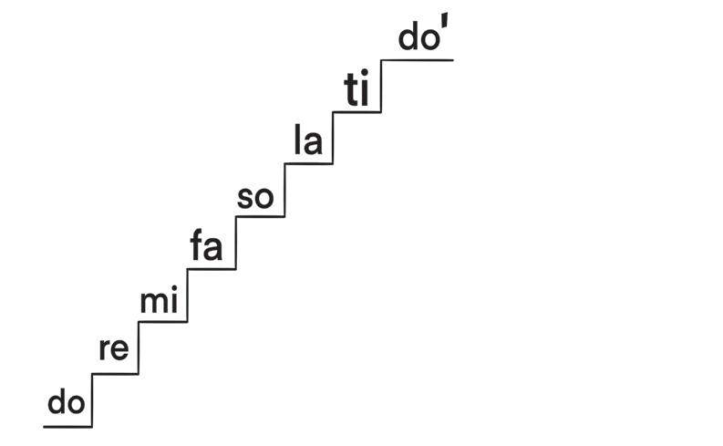

which is used as a tempo. Table number 1 shows whole note, half note and quarter note along with their corresponding beats.
| Shape | Name | Number of beats |
|---|---|---|
| 𝅝 | Whole note | 4 |
| 𝅗𝅥 | Half note | 2 |
| ♩ | Quarter Note | 1 |
Major scale
A major scale is a series of eight notes arranged in order. These notes are do re mi fa so la ti do'. These eight notes are called an octave. The eighth note is a repetition of the first note, but in a higher pitch. The eighth note is marked with an apostrophe (') to distinguish it from the low do. Figure 2 shows the major scale in ascending order.

The first noteThe eighth note(repeated)